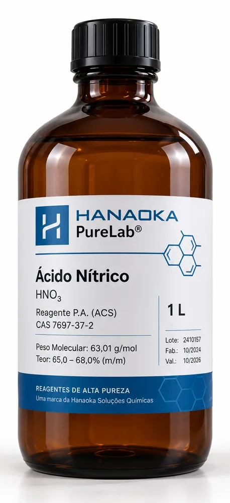
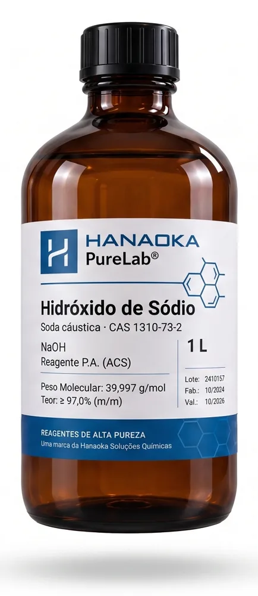
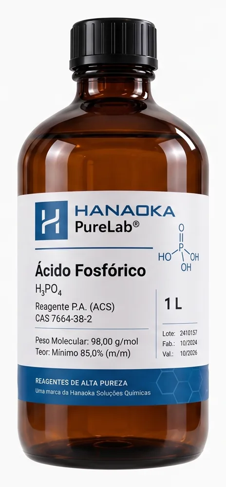
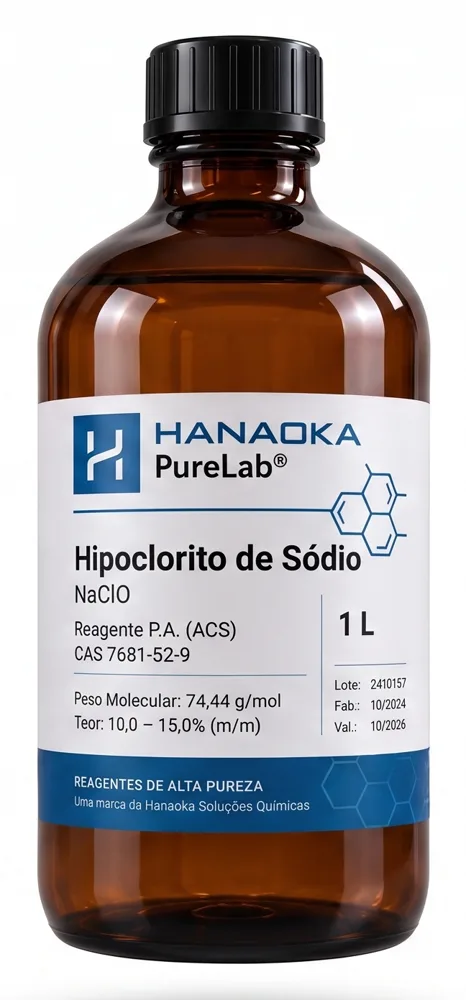
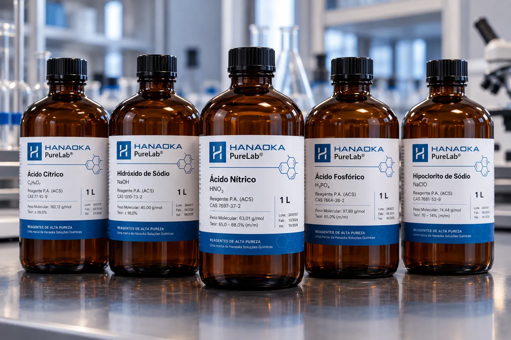

100%
dos lotes com certificado
A melhor experiência em reagentes está sendo carregada
Onde a rotina do laboratório de laticínios encontra reagentes confiáveis e rastreáveis.
100%
dos lotes com certificado
Metais controlados por ICP-OES em cada lote, para resultados consistentes de uma análise à outra.
Produtos

HNO₃ · CAS 7697-37-2
Aplicação potencial
Limpeza ácida de equipamentos e tubulações em sistemas CIP, em formulações e condições adequadas.

Soda cáustica · CAS 1310-73-2
Aplicação potencial
Limpeza alcalina para remoção de resíduos orgânicos, como gorduras e proteínas.

H₃PO₄ · CAS 7664-38-2
Aplicação potencial
Formulações de limpeza ácida para remoção de depósitos minerais.

NaClO · CAS 7681-52-9
Aplicação potencial
Tratamento de água e sanitização, conforme compatibilidade e requisitos sanitários.
C₆H₈O₇ · CAS 77-92-9
Aplicação potencial
Aplicações alimentícias ou de limpeza, conforme o grau e a especificação do produto.
As aplicações listadas são potenciais e não garantem que todos os graus comercializados sejam adequados para contato com alimentos. Consulte nossa equipe técnica para validar grau, formulação e requisitos do seu processo.
Onde a química está no laticínio
Da ordenha ao envase, a produção de leite, queijo e iogurte depende de limpeza, controle de qualidade e tratamento de água. São etapas em que os reagentes certos fazem diferença.
Equipamentos e tubulações precisam de limpeza eficiente para evitar acúmulo de resíduos entre um processo e outro.
Titulações de rotina dependem de reagentes de pureza conhecida e rastreável, lote a lote.
Sistemas CIP removem gordura e proteína com soluções alcalinas e remoção de depósitos minerais com soluções ácidas.
A água usada em toda a produção passa por etapas de tratamento e sanitização, conforme os requisitos do seu processo.
Qualidade
A Hanaoka purifica os próprios reagentes e controla o teor de metais contaminantes em cada lote. O certificado de análise acompanha o produto, do fabricante ao seu laboratório.
Purificação própria
Reagentes purificados pela própria Hanaoka.
Metais por ICP-OES
Medição de contaminantes metálicos em cada lote.
Certificado por lote
Rastreabilidade do lote ao certificado de análise.

Cada análise de rotina começa com um reagente em que você confia.
Falar com a equipe técnicaDúvidas frequentes
Contato
Informe os reagentes e o volume do seu laboratório. A equipe responde com a cotação e os certificados de análise.
Telefone
(11) 4615-9520 / 9529
(11) 97314-7630
contato@hanaoka.com.br
Endereço
R. Balão Mágico, 835 · Cotia, SP